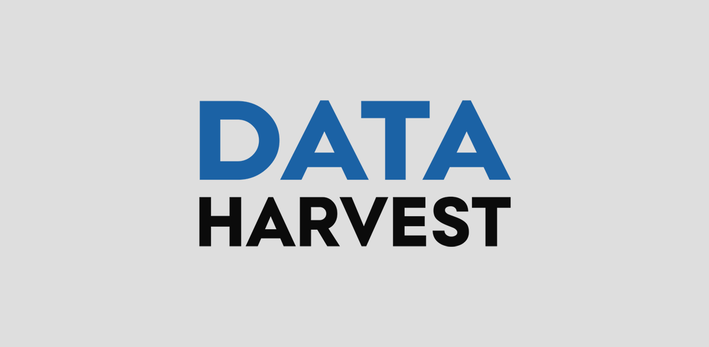
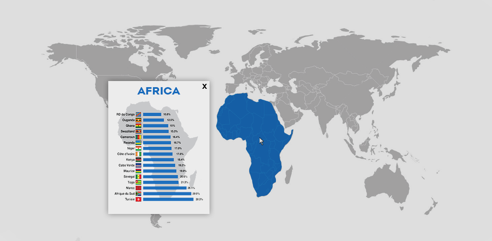
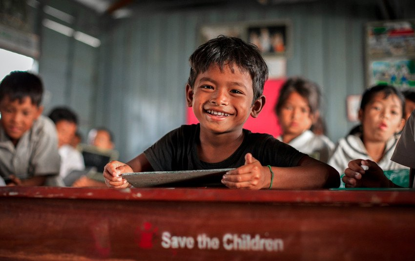

About Us
Data Harvest is an organization that uses technology to collect data in hope of reducing the amount of people who can't attend school. Our solution is a machine-readable absence document that is sent to a local central database.
Product
Our product is a machine that reads documents with registration of absence, and forwards to a database.
The point is that the documents are sent to central institutions.
This works by the local schools with low access to digital tools filling in
machine-readable documents which are forwarded to central institutions where they will be registered
and entered in a central database.
As the main focus for our solution, we chose areas and countries with low access to modern infrastructure such as electricity and grid access.
We wanted to formulate a solution that is relatively cheap to operate and requires minimal training of teachers at the local level to be used.
The solution must also be universal, ie that there must be no separate absence systems for schools with and without access to relevant infrastructure.
Statistics
Statistics that show a pattern of attendance and absence over time nationally, regionally or locally, will be able to help the administration to address the struggling students and adapt the curriculum for them. With few links between those who have the statistics, to the one who implements the measures themselves, to make the school day better. Reasons for absence must be registered, and can be done anonymously. Those who are absent can be sent a form, where the reason for absence is filled in if it takes place over a longer period of time.
Finances
The project can be financed through organizations such as Save children and efforts from local governments and school administrations. As this is a solution that should be relatively affordable in operation, the financing is planned to be well achievable. Private donors are an important source of contribution for Save the Children, so it is important to inform and engage this group. Save the Children already has many valuable partners, project partners, campaign partners and business sponsors who can be good contributors. Fundraising / fundraising campaigns to collect financial contributions to the same degree as Save the Children already does. Engage primary, secondary schools and sports clubs to organize fundraising activities and shed light on the topic.